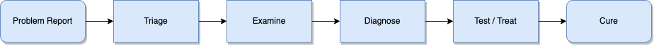
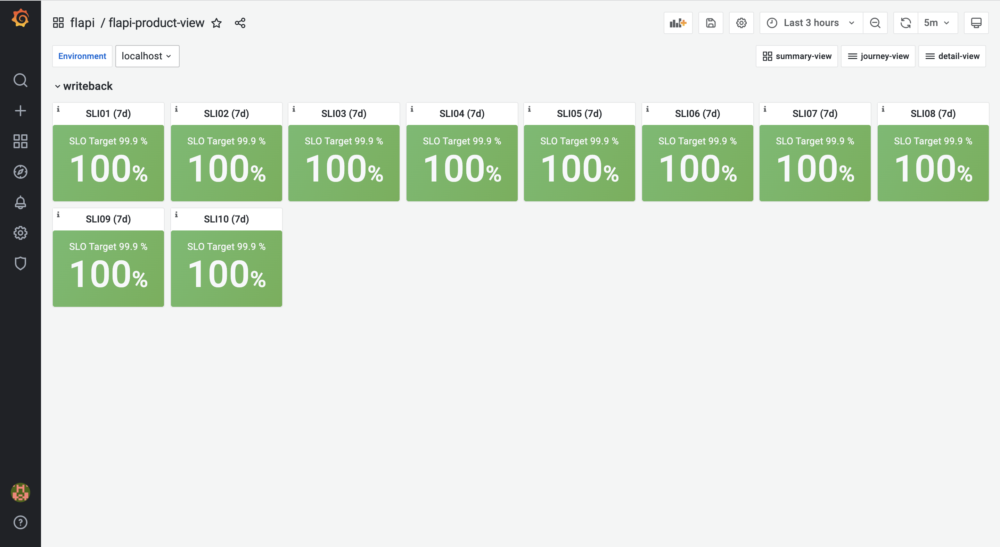
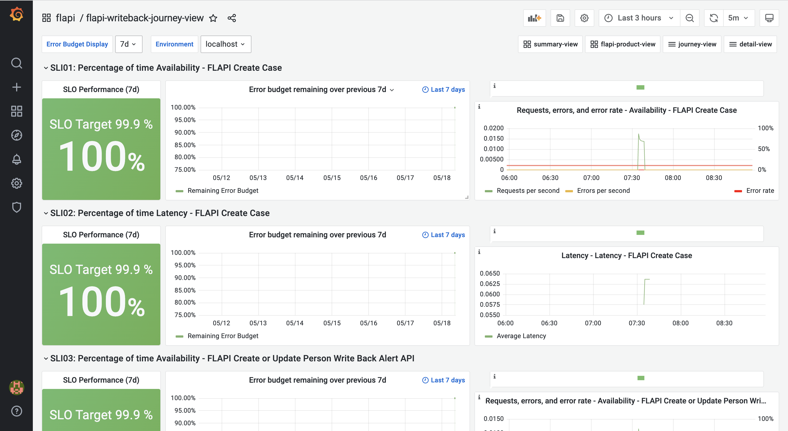
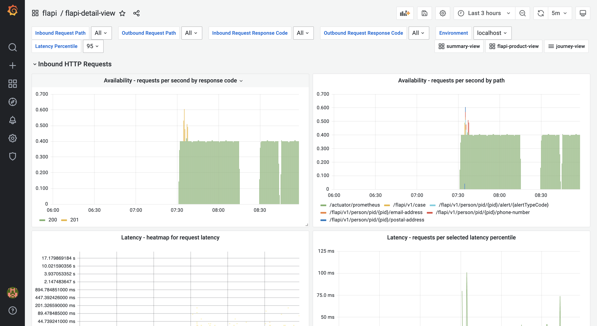

Responding to alerts
Debugging a digital service is never as clean as the idealized model presented below. However, using a combination of alerts, system metrics in dashboards and logs can help understand the current operating state. Google SRE has presented some useful steps below that can make the process less painful and more productive. We have overlayed how our Monitoring-as-Code framework can support those users responding to system problems.

Diagram courtesy of Effective Troublshooting - Google SRE Workbook
Problem report
Every digital service issue starts with a problem report, which might be an automated alert or one of our users saying, “The system is slow.” Monitoring-as-Code will deliver an automated alert if an SLO is in danger of being breached. Depending on how quickly the Error Budget is forecast to breach will determine what level of alert is triggered. Below we have detailed the typical makeup of an alert.
ALERT: grapi - severity: 2 - Availability - FLAPI Create Email Address Write Back API
Alert from HO-Monitoring <dashboard-link> <silence-link> <runbook-link>
• alertname: grapi_writeback_SLI05_ErrorBudgetBurn
• assignment_group: Great Respect API
• ci_type: CMDB_CI_Service_Auto
• configuration_item: Great Respect API (App Svc)
• description: SLI05 (writeback journey) is likely to exhaust error budget in less than 1.17 days
• environment: localhost
• event_class: HO Prometheus
• factor: 6
• host: localhost
• journey: writeback
• metric_name: http-errors
• node: Great Respect API
• resource: Great Respect API
• service: grapi
• severity: 2
• short_description: Availability - GRAPI Create Email Address Write Back API
• slo: SLI05
• title: 2 ALERT! localhost - grapi SLI05 - Percentage of time Availability - GRAPI Create Email Address Write Back API
• type: http-errors
• wait_for: 2m
• time_of_event: 2022-05-16 10:31:46.528812845 +0000 UTC
On receipt of an alert you should: -
- Assess the title, description and severity to ascertain the category of issue, which SLI the alert relates to and how many users are impacted (based on the severity of issue).
- Use the dashboard links to navigate to the monitors for further diagnoses.
Triage
On receipt of an alert and in the absence of auto-ticketing. You should create an ServiceNow incident populating the fields using the alert labels provided for Primary Service Impacted, Configuration Item, Assignment Group and Severity.
Examine
product-view
Consult the product-view dashboard (pictured below) to confirm the SLI which is at risk of breaching its SLO. Select the associated SLI to drill-down into the journey-view.

journey-view
Use the journey-view dashboard (pictured below) to discover remaining error budget, the error rate spikes that have caused the forecasted breack of SLO before drilling down to the detail view.

detail-view
Use the detail-view dashboard (pictured below) to drill into the telemetry label values in greater detail. For example with availability http errors use the dashboard to identify which paths and status codes are contributing to the error budget burn.

Diagnose
With a better understanding of the symptoms (in the example above http errors), it is now important to unpacking the causes of a symptom and ask the "what," "where," and "why".
Use a combination of logs (pictured below) and monitors to find out what it’s doing, then asking why it’s doing that and where its resources are being used or where its output is going can help you understand how things have gone wrong.